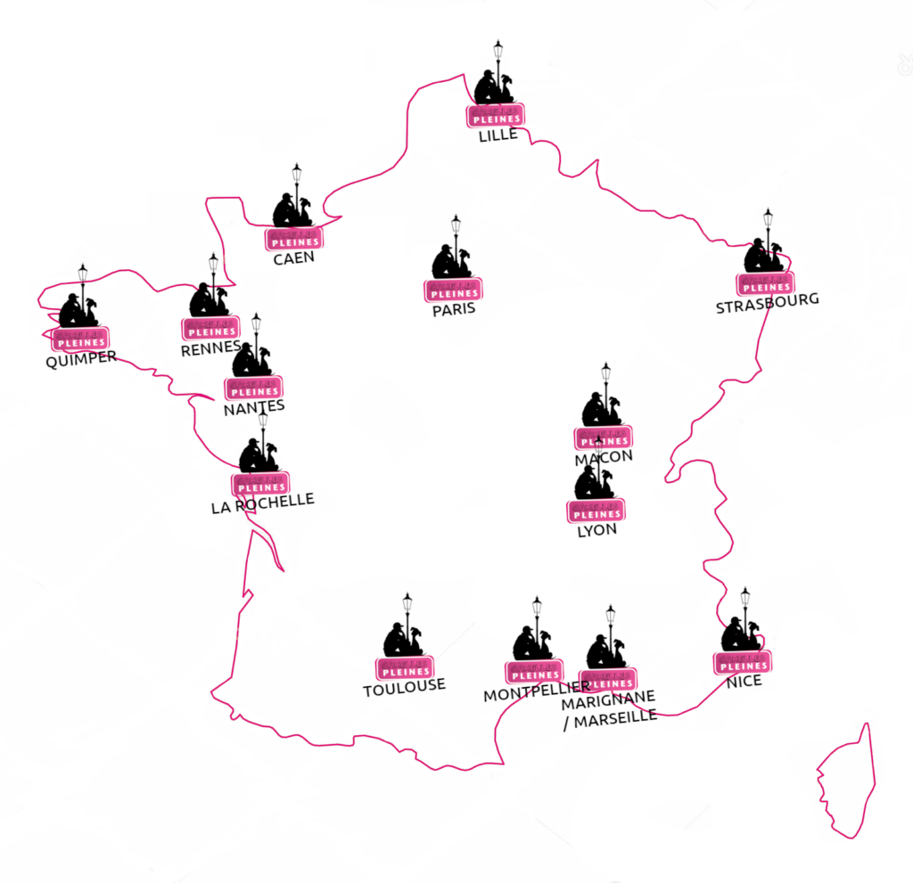

🌱 Éducation
Ateliers hebdomadaires dans les écoles pour apprendre le cycle des plantes et le respect du vivant.
Depuis 2018, nous transformons les espaces urbains inutilisés en jardins partagés accessibles à tous les habitants.

Ateliers hebdomadaires dans les écoles pour apprendre le cycle des plantes et le respect du vivant.
Des moments conviviaux chaque samedi matin autour du potager pour réunir toutes les générations.
Création de zones de compostage collectif et préservation de la biodiversité locale en ville.